ENGINEERING BLOG ドコモ開発者ブログ
https://nttdocomo-developers.jp/
ENGINEERING BLOG ドコモ開発者ブログ
フィード
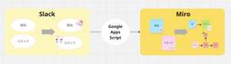
流れて消えるSlackの「アイデア」を、Miroで「使える資産」に変化させる自動化術
ENGINEERING BLOG ドコモ開発者ブログ
はじめに 背景 Miroとは何か？ Miroの主な特徴 流れるSlackの投稿内容を、Miroで「使える資産」へ なぜ「リスト」では思考が止まるのか？ Miroを使う意味は「散らかせる」ことにある いざ実装！...と思いきや、セキュリティの壁 発想の転換：プッシュがだめならプルでいく 実装のこだわりポイント 1. リアクションの「色」で意味を変える 2. 「bulb」って何？ APIの罠 完成したコード（ダイジェスト） SlackからMiroへ、思考が繋がる瞬間 「保存」から「創造」へ まとめ はじめに 本記事は、NTTドコモ R&D Advent Calendar 2025の12月13日の記…
15時間前
MagicPod × FlutterでAndroid/iOS自動テストを一本化して自動化コストを約50％削減した話
ENGINEERING BLOG ドコモ開発者ブログ
MagicPodを利用したFlutterアプリのE2Eテスト自動化で、テストケース作成コストを50%削減した事例とその手法を紹介。
15時間前
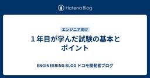
１年目が学んだ試験の基本とポイント
ENGINEERING BLOG ドコモ開発者ブログ
はじめに 試験の流れ １試験計画 ２試験準備 ３試験実施・不具合記録 試験計画 試験実施・試験結果記入 自動化試験の活用 まとめ はじめに 情報システム部１年目の佐藤と申します。私はソフトウェア開発の試験工程に携わっており、日頃から試験業務を専門的に対応いただいている方に試験の基本的な考え方についてレクチャしていただく機会がありました。本記事では、そのレクチャで学んだ内容と業務で実際に試験を経験して感じたことを交えながら、試験の流れと各工程で気を付けるべきポイントについて記載していきます。 試験の流れ まず、試験工程の概要を説明します。 １試験計画 試験計画では、スケジュール立案を行います。ス…
1日前
1年目で学んだアジャイルの仕組みと自担当での実践
ENGINEERING BLOG ドコモ開発者ブログ
■はじめに ① アジャイルとは何か ～アジャイル勉強会の内容から～ 1. ウォーターフォール開発との違い 2. アジャイル開発の進め方 ② CSPOで学んだアジャイルの理想とPOの役割 1. POの役割 2. PBLの優先順位付け 3. アジャイルを進めるうえでの重要なポイント ③ 自チームでのアジャイル実践 1.スクラムイベントの運用 2.CSPOで学んだアジャイルの理想の自チーム内での実践 価値と技術をつなぐPOの取り組み 自担当のPBLの細分化 ④ CSPOで学んだ進め方と自担当の進め方の比較と考察 違いの理由考察 ⑤ まとめと今後の方向性 ■はじめに NTTドコモ情報システム部の前田と…
1日前
ドイツ・ミュンヘンで働く。ドコモのグローバルOJTで出会った『世界標準』を作る仕事の流儀 #ドコモユーロ研究所
ENGINEERING BLOG ドコモ開発者ブログ
1. はじめに 2. この記事はこんな方におすすめ 3. ユーロ研…の前に、NTTドコモのグローバルOJTとは…？ 概要 私のグローバルOJT 4. ユーロ研ってこんなとこ！ ドコモユーロ研の役割 これがドコモユーロ研のすべてだ！ ドコモユーロ研のいま 5. OJT生 中村が見たドコモユーロ研 働き方と環境 技術力の高さ 職場の雰囲気 6. さいごに リンク集 1. はじめに こんにちは。欧州に位置するドコモユーロ研究所の中村です。 いま、私はグローバルOJT生として、ドコモユーロ研究所にて、マーケティング・事業開発を担っています。今日は現在まで約8か月間のユーロ研究所での経験を通して私の目線…
2日前
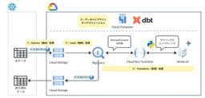
AWSエンジニアがGoogle Cloudに挑む：Iceberg×Geminiで実現するプラットフォーム構築の舞台裏
ENGINEERING BLOG ドコモ開発者ブログ
はじめに NTTドコモ データプラットフォーム部 外山です。 NTTドコモではお客様起点の事業運営を実現するために、その声を誰でも簡単に分析できるアプリを社内データ活用プラットフォームPochi*1上で開発・利用しています。 声の利活用においては、一つ一つのお客様の声データにデモグラ情報や、ポジティブ評価、ネガティブ評価を行い、非構造化データを分析可能にする必要があるため、過去に以下のブログ記事でご紹介した専用のデータパイプラインを構築して利用していました。 nttdocomo-developers.jp より様々なお客様の声データを⼀元的に取り扱えるよう、Google Cloud上に新たにプ…
2日前
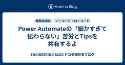
Power Automateの「細かすぎて伝わらない」苦労とTipsを共有するよ
ENGINEERING BLOG ドコモ開発者ブログ
エラーや仕様変更を経たPower AutomateでのSharePoint操作の実例と解決策を共有。改善に役立つ詳細なTipsや実行方法のコツを伝授。
2日前
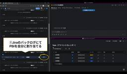
Jiraで自分に割り当てられたPBIをSlackリストに自動追加させてみた
ENGINEERING BLOG ドコモ開発者ブログ
■ この記事を読むとわかること 開発業務と社内業務を合わせたおすすめのタスク管理方法 JiraとSlackリストの連携方法 この記事でやりたいこと ■ 目次 ■ この記事を読むとわかること ■ 目次 ■ はじめに 自己紹介 やりたいこと ■ 各サービスの基本機能 Jira Automation Slackリスト ■ JiraからSlackリストの自動追加設定 1. Slackワークフローを作成 2. Jira Automationを作成 3. 動作確認 ■ さいごに ■ はじめに 自己紹介 こんにちは。第一プロダクトデザイン部に所属している新入社員の村山です。普段はアジャイル開発を行っており、…
2日前
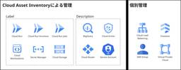
放置されたリソースをゼロへ！Cloud Asset Inventoryで進めるGoogle Cloud資産整理実践
ENGINEERING BLOG ドコモ開発者ブログ
TL;DR Google Cloudのリソース管理に課題を感じていませんか？「どのリソースがどのチームのものか分からない」「不要なリソースが放置されてコストが膨らんでいる」といった悩みを解決するため、Cloud Asset Inventoryを活用した実践的な資産管理手法をご紹介します。 1. 自己紹介 NTTドコモ データプラットフォーム部（以下DP部）黒須です。DP部では社内データ活用プラットフォームPochiを開発・運用しております。 プラットフォームの運用拡大に伴い、アプリの増加やLLMの導入により Google Cloud 上のリソースが増加しました。その結果、どのリソースがどのチー…
3日前
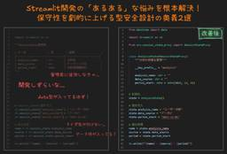
Streamlit開発の「あるある」な悩みを根本解決！保守性を劇的に上げる型安全設計の奥義2選
ENGINEERING BLOG ドコモ開発者ブログ
NTTドコモ データプラットフォーム部（以下DP部）外山です。 DP部では「『あらゆる業務・現場のニーズに応じられる』柔軟なデータ活用環境」を目指し、社内データ活用プラットフォームPochi*1の開発を進めています。 一つ目のアプリが産声を上げてから2年以上が経過し、様々なアイデアが形となって、名実ともにビジネス部門と共にプロダクトの成長を続けてきました。 そのプロセスにおいて、Streamlitそのものも進化を続けている反面、長年開発してきた私たちの実装上の気づきが眠っています。 特に、アプリ初期開発時点から中規模開発以上に至ったアプリが直面する課題は私たちならではかと思います。 そこで、D…
3日前
技術がお金になっているか？─時間あたり採算で考えるエンジニアリングの価値─
ENGINEERING BLOG ドコモ開発者ブログ
あなたは自分の技術がどれだけ利益に貢献しているか考えたことがありますか？ 「速く終わったのに、評価されない」の正体 時間あたり採算で考える重要性 価値を伝えないと「ないもの」として扱われる 「技術＝コスト削減＝利益貢献」という認識を浸透させる 会議にも「価値換算」の視点を まとめ はじめまして。 株式会社NTTドコモ 第一プロダクトデザイン部で開発エンジニアをしている平野裕介と申します。 私の仕事は、エンジニアの立場からチームメンバーと共に、エンドユーザへの価値提供や事業貢献をすることです。 ただある日、ふと思いました。 「自分の仕事の価値をどうやって人に伝えられるだろう？」 あなたは自分の技…
3日前
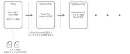
GitHub Copilotを育ててSQLを効率的にdbtモデル化した事例
ENGINEERING BLOG ドコモ開発者ブログ
1. はじめに ドコモのデータプラットフォーム部の中村光宏と申します。 この記事では、GitHub CopilotのCustom Instructions を強化しチームのKPI管理に使っていた既存のSQLをdbtモデルに変換した経験と学びをまとめました。 まだベストプラクティスが少ない「Agentによるdbtモデル構築」について、実際に手を動かして得られた知見や工夫をまとめていますので、これからdbtの導入を検討している方や、Agentを活用して効率的にdbtモデルを作成したい方にとって、有益な情報となれば幸いです。 目指したゴール/目指さなかったゴール 今回の取り組みでは、Agentをdb…
4日前
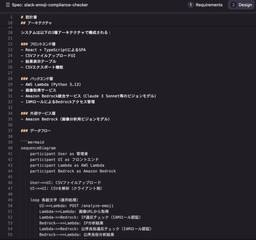
Kiro IDEで実践する仕様駆動開発
ENGINEERING BLOG ドコモ開発者ブログ
開発で求められる品質と確実性を担保する「仕様駆動開発」をAmazon Q Developer (Kiro IDE)のSpecモードで実践。AIエージェントと人間が役割分担し、内製化を推進する手法を解説します。
4日前
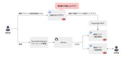
試すのは簡単、仕上げるのは難しい。AIエージェント×Playwright MCPを使ったE2Eテストアプリの開発と苦労
ENGINEERING BLOG ドコモ開発者ブログ
自己紹介 NTTドコモ データプラットフォーム部（以下DP部）矢野です。 我々が提供している社内データ活用プラットフォームPochiでは、特定の部署に閉じない様々な部門のメンバが日々アプリを開発しています。 このPochiでのアプリ開発者を支援する取り組みとして、Playwright MCPを使った自動E2Eテストアプリを開発しました。 本記事では、その開発の経緯と工夫点について、支援メンバであるNTTデータ デジタルサクセスソリューション事業部 鈴木さん・臼倉さんに執筆いただきます。 社内データ活用プラットフォームPochi*1とは 私たちDP部は社内のデータ民主化を目指し、Streamli…
4日前
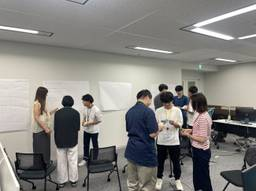
スクラムチームを強くする ~One Team を取り戻すチームビルディングの実践~
ENGINEERING BLOG ドコモ開発者ブログ
1. 自己紹介 NTTドコモ 第一プロダクトデザイン部で 人事・人材育成を担当しているジル (本名:齊藤 亮二)です！ プロダクトチームが “One Team” として力を発揮できるよう、 アジャイル開発の浸透支援や学習機会の設計、 そして実際にチームに入り込んで伴走する アジャイルコーチ として活動しています！ ↑今年の5月には、ボストンで行われたRed Hat Summit2025にて、アジャイルコーチや組織のチーム力向上の取り組みについて登壇してきました！ 現場に寄り添いながら、メンバーが長所を活かして本来持っている力を引き出し、チームが自走できるようになる姿を見るのが何より好きです！！…
4日前
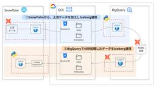
Iceberg × dbt × BigQuery × Snowflakeでつくる、マルチDWHパイプライン 3
3
ENGINEERING BLOG ドコモ開発者ブログ
Apache Icebergを用いて、SnowflakeとBigQueryを横断するマルチDWHのデータパイプラインを実現しました。開発・運用の効率性を高くするためdbtで実装したが、その中で気を付けなければいけない点が多くありました。想定する読者Icebergを用いたパイプラインをdbtで実現したいデータエンジニアの方マルチDWHでのデータ基盤を実現しようとしている方
5日前
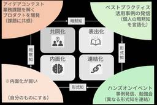
データ活用を社内文化へ──PdMが挑むキャズム越え。SECIモデル活用事例
ENGINEERING BLOG ドコモ開発者ブログ
ドコモが推進するデータ民主化。社内向けプラットフォームPochiのプロジェクトを通じ、SECIモデル活用でデータ活用を浸透させる方法を詳述。PdMやプロジェクト管理に興味ある方におすすめ。
5日前
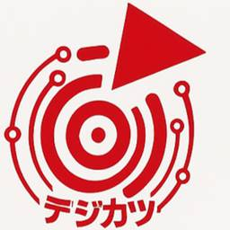
Digital Change Mind ―docomo社員自ら挑む、DX・AIによる変革の現場―
ENGINEERING BLOG ドコモ開発者ブログ
社員一人ひとりが自分の業務を自分で変革する―それが、今のドコモの新しいスタンダードです。 本記事では、私が組織内で開催した社員自身にDX・AI活用に挑戦してもらうための施策『デジタル民主化活動（デジカツ）』についてご紹介します！ 総勢200名以上の方が参加した本施策から、ドコモの"Digital Change Mind"を感じていただけたらと思います。 改めまして、NTTドコモ 第一プロダクトデザイン部 人事・人材育成担当の吉田です！普段は、最高のCX（顧客体験）を目指し、組織のDX・AI活用を促進する仕事をしています。 『デジタル民主化活動（デジカツ）』とは？ 『デジカツ：DXサポート』で見…
5日前
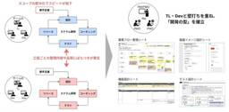
ドコモPMの実践録：Streamlitアプリ『導入期』から『成熟期』へ導くチームマネジメント
ENGINEERING BLOG ドコモ開発者ブログ
1. 概要 NTTドコモ データプラットフォーム部（DP部）の外山です。 社内データ活用プラットフォームPochi*1では、2023年4月に一つ目のアプリ開発から始まり、最初のユーザー獲得に奔走した「導入期」、多くの要望に応え開発をスケールさせた「成長期」を経て、2025年12月現在、私たちのプロダクトは成長期から成熟期の転換期にあり、アーリーマジョリティ層への拡大、いわゆる「キャズム超え」の真っ只中にいます。キャズムを超えるために、MAU（月間アクティブユーザー数）の継続的な増加と、利用部署数の拡大を主要指標とし、導入事例の社内展開や簡易アプリ開発ワークショップの実施といった施策を検討・実行…
6日前
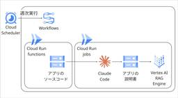
AIエージェントプラットフォームに向けた第一歩～アプリソースコードを用いたRAGコーパス自動更新～
ENGINEERING BLOG ドコモ開発者ブログ
1. 自己紹介 NTTドコモデータプラットフォーム部（以下DP部）黒須です。社内データ活用プラットフォームPochiのチームで、主にGoogle Cloudを活用したインフラ設計・構築・運用を担当しております。 社内データ活用プラットフォームPochi※1とは 私たちDP部は社内のデータ民主化を目指し、StreamlitとGoogle Cloudで圧倒的に使いやすいデータ活用プラットフォームを開発・推進しています。このプラットフォームは、24年度は30万時間もの業務効率化を実現し、直近では5,000人以上の社員に利用が拡大しています。 ASCII.jp：NTTドコモ、Streamlit利用の“…
6日前
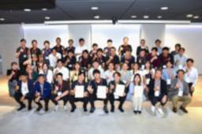
AIはトモダチ！新入社員が挑戦したAIと共創するモノづくり体験
ENGINEERING BLOG ドコモ開発者ブログ
NTTドコモの新入社員がAIをフル活用し、個性あふれる自己紹介サイトを制作した研修施策を通じて、プロダクトデザイン部の成長と文化形成を紹介します
6日前
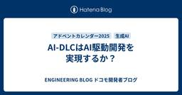
AI-DLCはAI駆動開発を実現するか？
ENGINEERING BLOG ドコモ開発者ブログ
AI-DLCのホワイトペーパーの原文は以下より参照ください。 AI-Driven Development Life Cycle (AI-DLC) - AWS White Paper I. はじめに 第一プロダクトデザイン部の廣瀬と申します。 今年はAI駆動開発という言葉をよく耳にした1年でした。 特にAmazon（AWS）から2025年8月に提唱されたAI-DLC（AI-Driven Development Life Cycle）は大きな話題となりました。 AI駆動開発は本当にエンタープライズレベルの開発に耐えうるソフトウェア開発パラダイムとなったのでしょうか？ 今回は、AI-DLCの内容を既…
7日前

コミュニケーションサービスにおけるアイテムリリース高速化の取り組み
ENGINEERING BLOG ドコモ開発者ブログ
Unreal Engineを活用したMetaMeでのUGC運用改善。アイテムリリースを円滑化し、ファンダムとのシナジーを図る。
8日前

「見える化」で称賛文化を育てる！Power BIで部内の活躍を可視化してみた
ENGINEERING BLOG ドコモ開発者ブログ
はじめに はじめまして！NTTドコモ 第一プロダクトデザイン部の伊藤です。 普段の業務では人材育成担当として、組織の生産性向上を推進するために、ノーコード・ローコードツールやAIなどのデジタルツールを活用した業務改革支援や、ツール勉強会を行っています。 この記事では、「社員同士が互いの活躍を称賛し合う文化を作りたい」という想いから生まれた「活躍事例ダッシュボード」をご紹介します。Power BIを使った技術的な実装だけでなく、取り組みの背景にあった想いと組織に生まれた嬉しい変化まで、その舞台裏をお話しします。 取り組みの全体像 今回ご紹介するのは、社員の社内外の活躍をSharePointで収集…
8日前

初学者むけ★スマホのつながる仕組み② ー 電源を入れただけで“つながる”理由──ネットワーク選択の仕組みをやさしく解説
ENGINEERING BLOG ドコモ開発者ブログ
自己紹介 ドコモユーロ研で所長をやっています、田中威津馬（たなか・いつま）と申します。ユーロ研はドイツミュンヘンにあり、通信規格の国際標準化の拠点として、現在は６Gとネットワーク仮想化基盤の研究開発と国際標準化を中心にとりくんでいます。世界各国の事業者・ベンダが採用し世界８０億人のひとたちの暮らしを支える技術を創り、世界に貢献をしたい・・そんな思いで日々仕事に邁進しています。また、ユーロ研では YouTube チャンネル も運営しており、技術トピックをわかりやすく解説する動画も公開しています。専門的な領域に触れつつ、できるだけ身近な視点で通信技術を紹介していますので、興味のある方はぜひ覗いてみ…
9日前
Slackリストを登録しただけなのに ～あの日のSlackの暴発についてすべてお話しします
ENGINEERING BLOG ドコモ開発者ブログ
Slackリストへの情報の登録を高速化した話。そしてそれにまつわるしくじりと対策について。
9日前
ユーザーストーリーで紐解くプロンプト改善術 ～AIで開発初速を上げる画面イメージの作り方～
ENGINEERING BLOG ドコモ開発者ブログ
はじめに NTTドコモ データプラットフォーム部（以下DP部）外山です。 DP部では「『あらゆる業務・現場のニーズに応じられる』柔軟なデータ活用環境」を目指し、社内データ活用プラットフォームPochi*1の開発を進めています。現場ニーズへ迅速に応えるには (1) 事業変化に追従する高速試作 と (2) 実運用に耐えるユーザー起点のアプリ開発 が鍵となる中で、この2点を成立させるには、要件定義初期に利用者との認識（期待する体験・操作感）を素早くそろえることが不可欠です。つまり、画面イメージをいかに高速に作成し、修正を加えながら認識合わせを行えるかが重要となります。 今回は、画面イメージを Vib…
9日前
プロンプトエンジニアリングで創る「AI部長」｜資料レビューを半自動化した実例
ENGINEERING BLOG ドコモ開発者ブログ
TL;DR NTTドコモの管理職である筆者が、自身の思考・判断基準を模倣したAIアシスタント「AIイッセー」を開発。AIに指示するプロンプトとAIに与える背景情報・学習データであるコンテキスト（過去資料・Slack投稿）のみで構成され、資料レビューを効率化させ、MTG時間を2割短縮、MTG数も25%減を達成。現在50人超が利用し、2つの亜種も誕生。本記事では、プロンプト全文とコンテキスト作成手順を公開し、誰でも「AI上司」を活用・再現できる実践ガイドを提供する。 本blogはAIイッセー(Amazon Bedrock(Claude 4.5 sonnet))と共著しています TL;DR 1. は…
9日前
実務で使うMCPサーバーを、Cloud Run Serviceで管理しよう
ENGINEERING BLOG ドコモ開発者ブログ
自己紹介 NTTドコモ データプラットフォーム部（以下DP部）田中です。DP部ではデータ活用の民主化を目指して社内向けにstreamlitの開発プラットフォームを独自に実装し、運用してから2年以上経過しました。 参考： 一昨年の記事 社員1000人以上が使う、Streamlit in Google Cloudのサーバレスプラットフォームを完全内製してみた 昨年の記事 セキュリティのためのプラットフォームエンジニアリング -認知負荷を軽減するDevSecOps in GoogleCloud この2年でトレンドも大きく変わり、AIエージェントという言葉を聞かない日がないほど、AIの活用が広く普及し…
10日前
SlackでAWSコスト状況を聞けるAIチャットボットを作った話
ENGINEERING BLOG ドコモ開発者ブログ
1. はじめに こんにちはNTTドコモ 第二プロダクトデザイン部の森田康平です。 普段の業務ではd払いをはじめとした金融系サービスのシステム基盤を担当しています。 突然ですが皆さん、うっかりミスは誰にでもありますよね。 行き先とは反対の電車に乗ってしまったり、出社したのに家にPCを忘れてしまったり、 そうそうあとは個人のAWSアカウントでハンズオンした後にAWSリソースの削除を忘れてしまったり。 ＼(^o^)／ 今回は、過去の戒めとしてAWSのコスト状況を分析してくれるAIチャットボットを作ります。 CloudWatch AlarmsやAWS Budgetsを利用することで、請求額のアラートを…
10日前